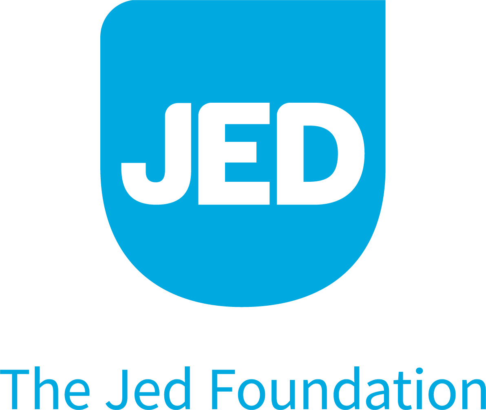
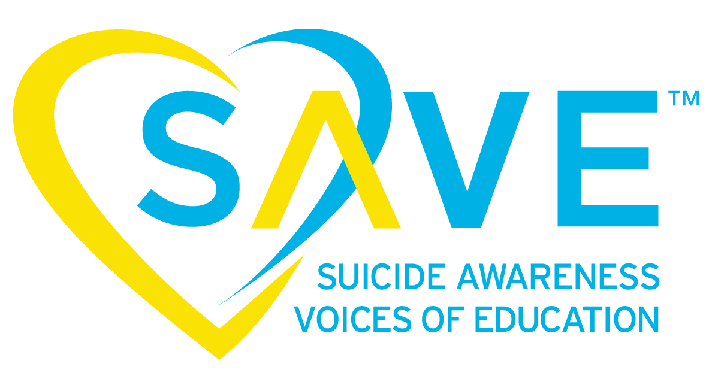
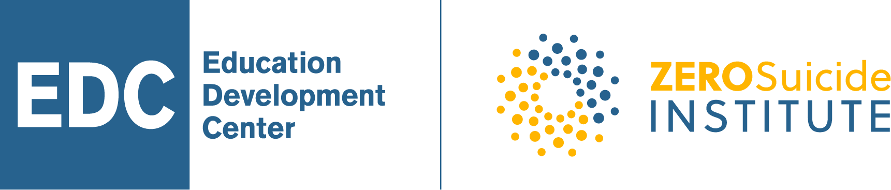
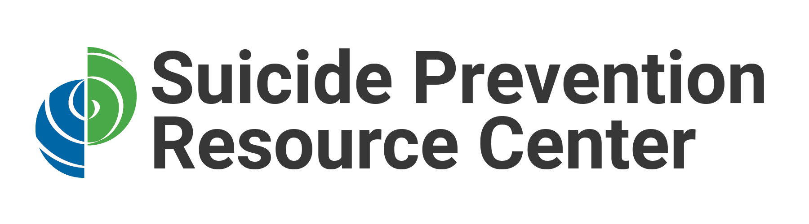
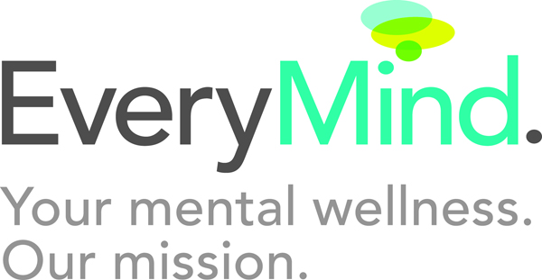
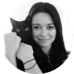
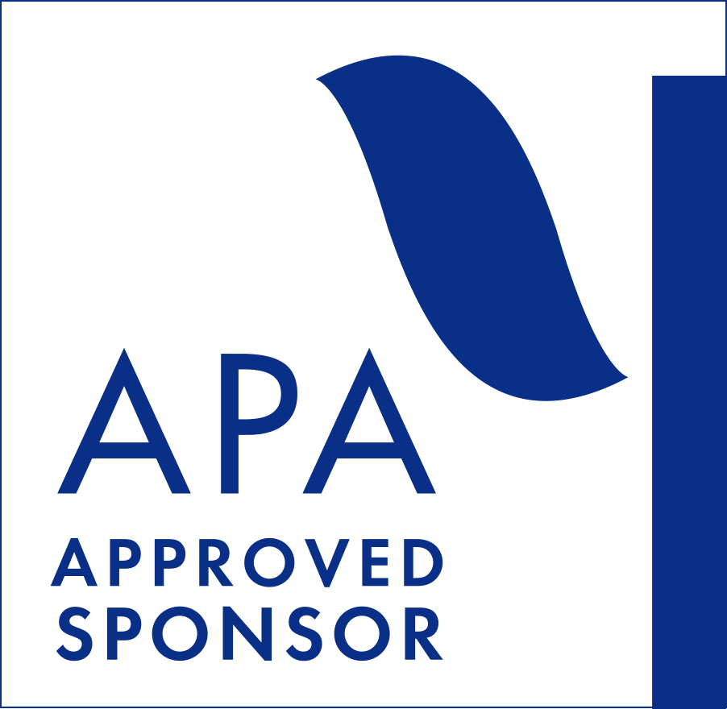

0
Registered clinicians & advocates
across all sessions
Impact Report The Wellness Institute In partnership with AFSP
The 6th Annual Summit on Suicide-Safer Care in Clinical Practice brought 430+ clinicians and advocates together with the creators of the field's leading interventions. Over two days, they transformed the most daunting conversation in clinical care into one that providers now feel ready and equipped to navigate.
The Summit is an incredible gathering of experts in the field that provides directly applicable information that can help clinicians be more effective in their work with people struggling with suicide, and can literally save lives.— Cameron Searle, Office of Mental Health, New York State
Who we convened
Registration drew a multidisciplinary audience of frontline clinicians, program leaders, educators, and advocates from across the United States and four continents.
What happened over two days
The Summit brought together the leading names in suicide care and showcased their evidence-based interventions.
How the faculty were received
Every single evaluated faculty member scored between 4.53 and 4.71 across the full two-day program.
The 2026 faculty
What changed for participants
In their own words
The Sixth Annual Summit unveiled a new horizon for trainings in the U.S. Rather than sticking to a single theory and single modality, the teaching environment grew vibrant and complex. Participants had choices to make. By learning new ideas, our familiar ideas grew more meaningful.
Suicide-prevention advocateThe presenters were extremely knowledgeable, efficient, and informative. As someone who has dealt with suicide risks professionally and personally, I gained a lot of new and valuable information.
AdministratorTop-notch presenters on the cutting edge of treating suicidal thinking and behavior.
Licensed Counselor & AdministratorThis program was amazing, bringing hope to those struggling with suicidal thoughts and loss.
Medical ProfessionalAn essential experience for all clinicians.
Licensed Counselor & AdministratorReal-world experts with real-life practice examples to assist with what many consider very complex issues.
Social WorkerA unique and creative approach exposing therapists to the various models and theoretical approaches. I loved the case discussion, which made the information more accessible.
Marriage & Family TherapistVery informative. Great faculty. Created a safe environment for all questions.
Medical ProfessionalThis summit was so engaging, applicable, and full of caring and knowledgeable presenters that I left feeling energized and hopeful despite the distressing topic.
PsychologistMy favorite part was the fast-paced rounds of professionals presenting how they would apply their theory or approach to a case.
Social WorkerGetting to hear about evidence-based interventions from leaders in the field was wonderful, especially the content on firearms and lethal-means restriction.
PsychologistSuicidal Mode and Fluid Vulnerability Theory was a fantastic way to frame the complexities I'm seeing with clients, and it helps me think differently about risk assessment. I'm also going to look at utilizing CAMS in practice.
Social WorkerSo much useful information in a short time to help provide the best care to our patients and clients.
Social WorkerGuy Diamond's approach and presentation was not only informative; his tone, manner, and presence matched what is essential for clinicians to embody.
Social Worker





The Sophie Fund8.0 CE contact hours
